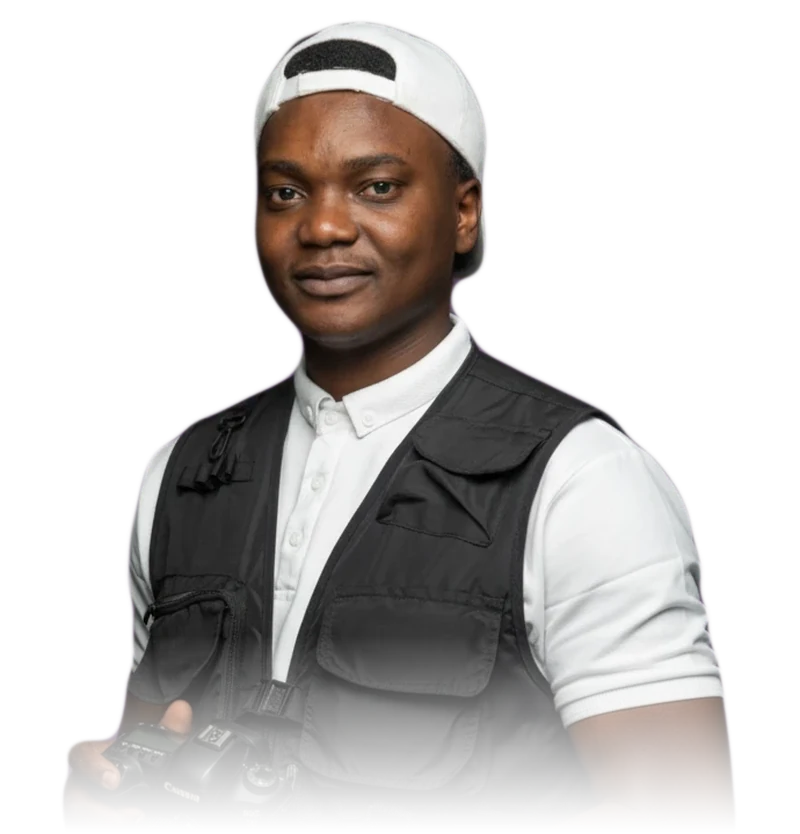

تدريب شخصي
جلسات فردية لتطوير مهارات المونتاج، السرد البصري، وصناعة المحتوى.
تفاصيل التدريب ←مونتاج وأفلام قصيرة للجهات والعلامات.
المونتاج عندي ليس قصّاً ولصقاً، بل هندسة للمشاعر.

أنا سعيد إسماعيل (سعدون). أحوّل اللقطات إلى لحظات جميلة، وأصنع أفلاماً قصيرة تجعل المشاهد يعيش الشعور لا يشاهده فقط. اشتغلت مع جهات حكومية وجمعيات وعلامات تجارية، وشريك موثوق للعديد من شركات الإنتاج.
أغلب المقاطع تفقد المشاهد في الثانية الثالثة. شغلي أن تكسبه فيها، وتمسكه حتى آخر لقطة.
المونتير يسأل: وش اللقطات اللي عندي؟ وأنا أسأل: وش لازم يحس فيه المشاهد؟
القطع السريع «حماس»، والقطع البطيء «هدوء». كل قطع جملة، والمخرج يكتبها.
أشيل لقطة حلوة إذا ما تخدم القصة. أحياناً أقوى قرار في الفيلم هو اللي انحذف.
أربع مراحل يمر بها كل مشروع، من أول سؤال إلى آخر ملف.
أبدأ من سؤال واحد: وش لازم يحس فيه المشاهد في آخر ثانية؟ ومنه تتحدد القصة.
أرتّب اللقطات بإيقاع يكسب المشاهد من الثانية الثالثة، وأحذف ما لا يخدم القصة.
تلوين يوحّد المزاج، وصوت وموسيقى ترفع اللحظة بدل ما تزاحمها.
نسخ جاهزة لكل منصة ومقاس، وأرشفة مرتبة للمشروع بعد التسليم.
أعمال شاركتني الرحلة بكل فخر. اضغط على أي عمل لتشاهده.
في إطار الخبرة والممارسة المستمرة، أقدّم مجموعة من الخدمات الإبداعية التي تساهم في بناء المشاريع وتعزز قيمة العلامة التجارية.
جلسات فردية لتطوير مهارات المونتاج، السرد البصري، وصناعة المحتوى.
تفاصيل التدريب ←أساعد الجهات على بناء مركزها الإعلامي من الصفر: الفريق، المعدات، سير العمل، والهوية المرئية للمحتوى، حتى يصير الإنتاج من داخل الجهة.
ابدأ التأسيس ←مكتبتي الخاصة من الموارد والأدوات التي أعتمد عليها في شغلي، أشاركها مع المونتيرين وصنّاع المحتوى.
اسأل عن المكتبة ←جلسات فردية معي، من واقع ١٢ سنة وعشرات المشاريع. نشتغل على لقطاتك أنت، وتطلع من كل جلسة بشيء تطبّقه في نفس اليوم.
المحاور مقترحة وتتعدّل حسب مستواك وهدفك.
أدوات البرنامج، بناء التسلسل، القطع، وكيف يتحكم الإيقاع بشعور المشاهد.
من الفكرة إلى القصة: بداية تمسك المشاهد في الثواني الأولى، ونهاية تبقى.
تصحيح الألوان والتلوين، تصميم الصوت، والموسيقى التي تخدم اللقطة.
تحويل المونتاج إلى مشروع مستمر: الأفكار، هوية المحتوى، وتجهيز الملفات للنشر.
متاح لمشاريع جديدة · السعودية وعن بُعد